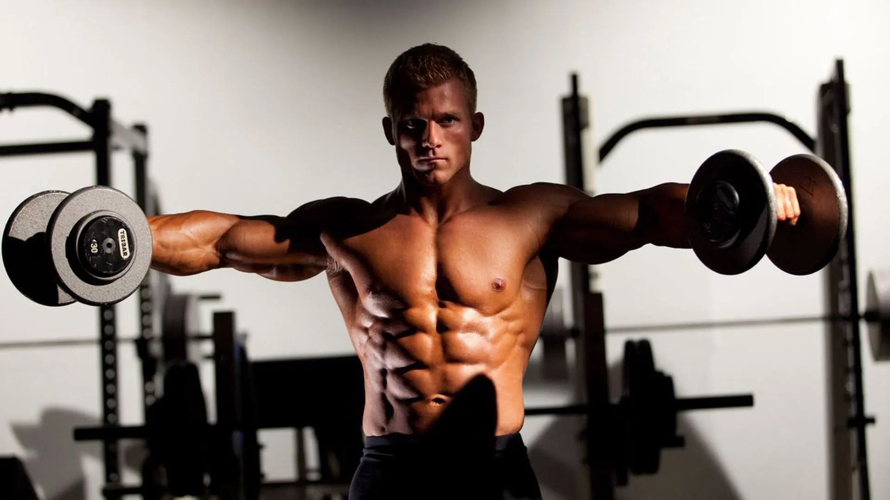

El deltoides lateral es uno de los tres músculos que componen el deltoides, ubicado en la parte media del hombro. Es la sección del hombro más grande y es responsable de la abducción del brazo, es decir, levantar el brazo hacia los lados y alejarlo del cuerpo. Este músculo es muy importante para la estética en general ya que unos hombros grandes aportan mucho a lograr la forma en "V" tan buscada por los fisicoculturistas.
El único ejercicio para el deltoides lateral que necesitas, infaltable, efectivo e infalible. Te recomiendo realizarlo con mancuernas, debido a que en este sitio defendemos fervientemente los beneficios de usar pesos libres aunque también puedes realizarlo con polea lo cual ofrece tensión constante en el músculo ya que puede resultar beneficioso. Haz la versión que más te guste y más te resulte, recuerda que todos los cuerpos son diferentes.
